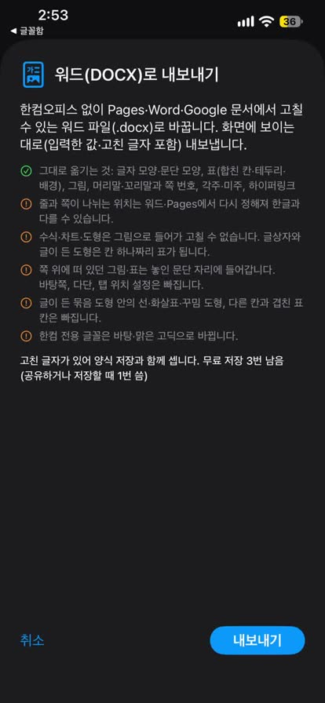
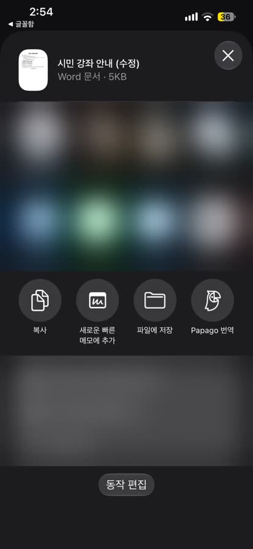

한글 파일을 워드(DOCX)로 바꾸기
HWP 뷰어를 만드는 개발자 ongsim이 직접 쓴 안내입니다.
이럴 때 씁니다
- 받은 한글 문서를 고쳐서 다시 써야 하는데 한컴오피스가 없을 때
- 한글 파일을 워드만 쓰는 사람에게 고칠 수 있는 형태로 넘겨야 할 때
아이폰·아이패드·맥. 기기 안에서만 바꾸고 문서를 서버로 보내지 않습니다.
순서
- HWP 뷰어에서 .hwp 또는 .hwpx 문서를 엽니다.
- 아이폰·아이패드: 오른쪽 위 ‘더 보기’(⋯) › ‘워드(DOCX)로 내보내기’를 누릅니다.
맥: 파일 › ‘워드(DOCX)로 내보내기…’(⇧⌘E)를 고릅니다. - 그대로 옮겨지는 것과 달라지는 것을 먼저 보여 줍니다. 확인하고 ‘내보내기’를 누릅니다.
- ‘파일에 저장’을 고르거나 Pages·Word 같은 앱으로 바로 보냅니다.


그대로 옮겨지는 것
- 글자 모양·문단 모양
- 표(합친 칸·테두리·배경), 그림
- 머리말·꼬리말과 쪽 번호, 각주·미주, 하이퍼링크
- 양식에 적은 값, 글자 고치기로 바꾼 글자, 서명 — 화면에 보이는 대로
달라지는 것
- 줄과 쪽이 나뉘는 위치는 워드·Pages에서 다시 정해져 한글과 다를 수 있습니다.
- 수식·차트·도형은 그림으로 들어가 고칠 수 없습니다. 글상자와 글이 든 도형은 칸 하나짜리 표가 됩니다.
- 바탕쪽, 다단, 탭 위치 설정은 빠집니다.
- 한컴 전용 글꼴은 바탕·맑은 고딕으로 바뀝니다.
무료로 쓸 수 있는 범위
문서 보기는 무료입니다. 워드 내보내기는 변환 기능(PDF·사진을 한글 파일로 포함)과 합쳐 3번까지 무료로 써 볼 수 있고, 그 뒤로는 평생 이용권(한 번 구매, 구독 아님)으로 계속 쓸 수 있습니다. 적은 값·서명·고친 글자가 있는 문서는 양식 저장 횟수로 셉니다. 내보내기 화면에서 남은 횟수를 먼저 알려 줍니다.
자주 묻는 질문
반대로 PDF나 종이 문서를 한글 파일로 바꿀 수도 있나요?
네. PDF·사진을 한글 파일(HWPX)로 바꾸기를 보세요.
워드로 고친 문서를 다시 한글 파일로 바꿀 수 있나요?
아직은 안 됩니다. 한글 파일로 받아야 하는 곳이라면 앱의 글자 고치기로 고친 뒤 새 한글 파일(HWPX)로 저장하세요.
함께 받은 워드 파일도 열 수 있나요?
네. 함께 받은 워드·엑셀·PDF도 한 앱에서 보기를 보세요.